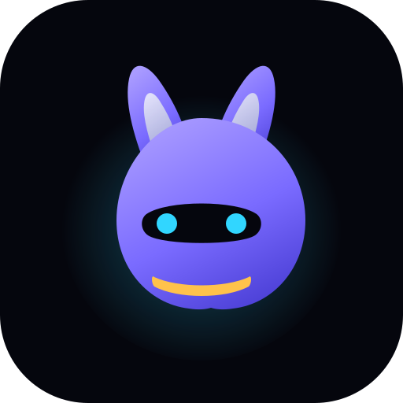

01
Signal
A single spark inside a soft aura. The most abstract of the three and the one that holds together best at tiny sizes, so it doubles as the favicon.
Every colour is taken from mobile/src/theme/tokens.ts. Open this file
directly in a browser: design/logos/preview.html

Pick 02 if the hero leads with the creature — it is the same
silhouette the 3D model will be, so the mark and the bunny agree.
Pick 03 if the takeaway should be “it is actually onchain”
— it reads as an asset, not a mascot. Pick 01 if you want the
least committal option that will not age badly.
Check 16px honestly: that is the size that actually matters, and 03 loses its
orbiting nodes there while 02 loses ear definition.